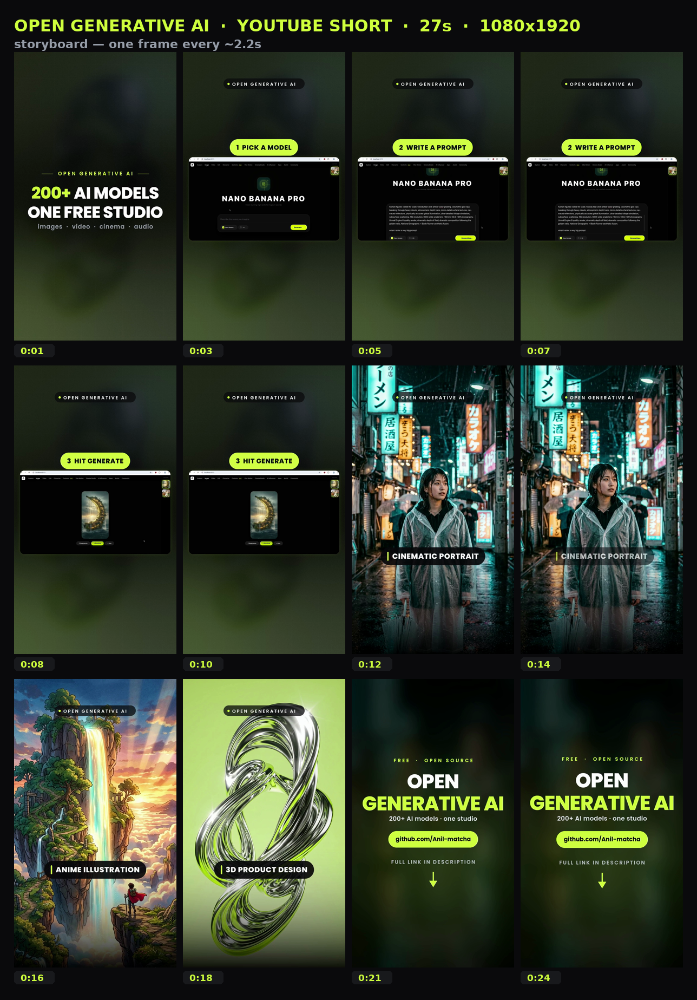

OPEN GENERATIVE AI
200+ AI models.
One free studio.
27s · 1080×1920 · 30 fps · H.264 + AAC · −14.2 LUFS · ready to upload as a YouTube Short
Tap the player to unmute — the soundtrack is an original synth track.
Structure
- 0:00Hook — “200+ AI models, one free studio” over a blurred lime sculpture
- 0:03Real studio UI: pick a model → write a prompt → hit generate
- 0:08The generated image appears in the app
- 0:12Showcase: cinematic portrait → anime illustration → 3D product design
- 0:21End card — repo link, free & open source, link in description
Files
Storyboard — one frame every ~2.2s
